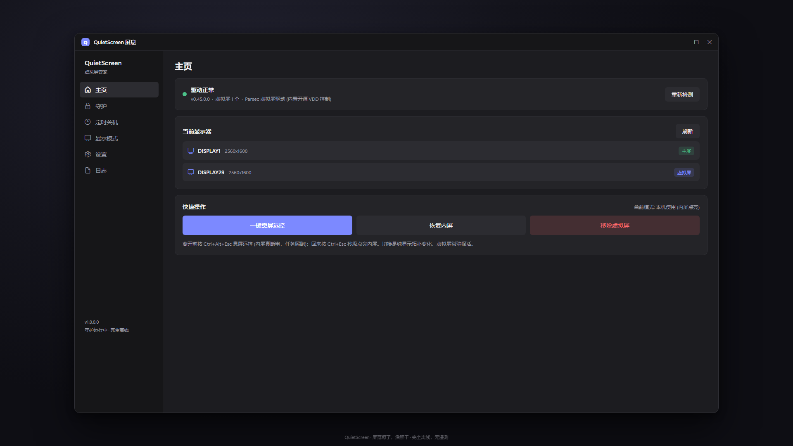
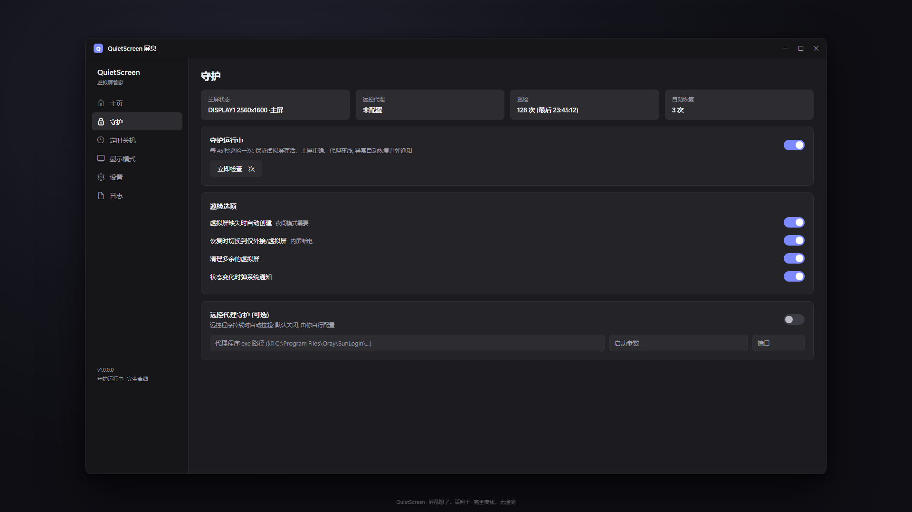
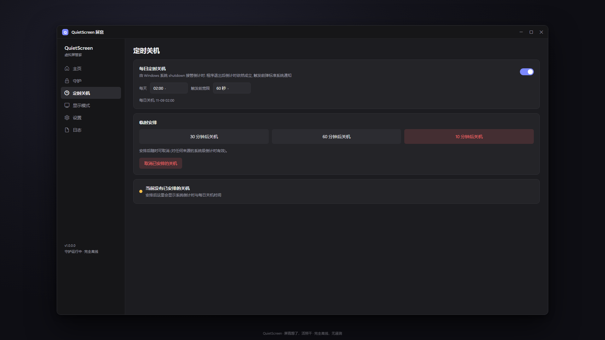
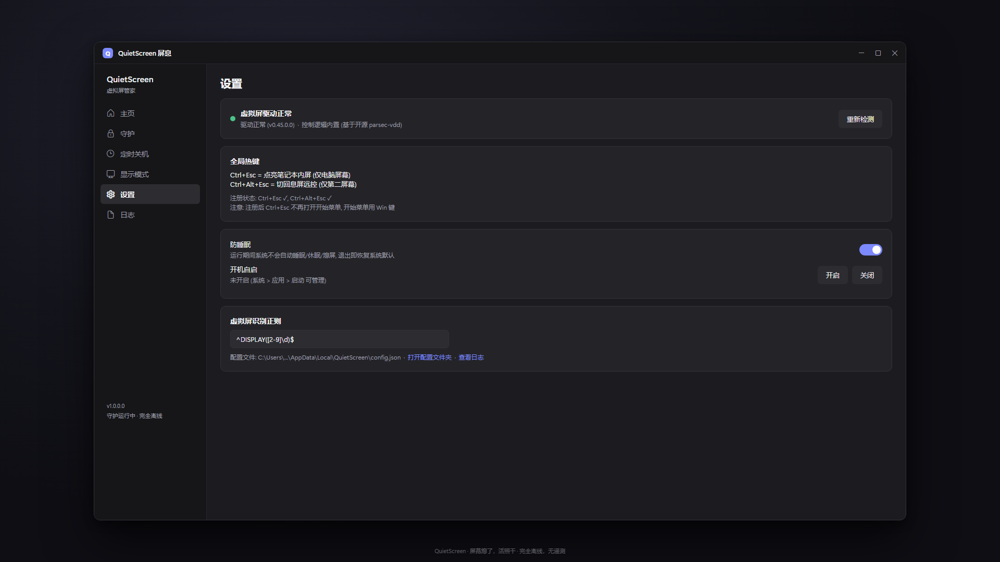

▣
真熄屏，不是遮罩
把内屏从显示拓扑级摘掉，硬件层面的断电；不靠调暗、不靠黑色窗口覆盖。
QuietScreen 屏息让笔记本常驻一块虚拟显示器。离开时一键把内置屏幕从显示拓扑里真正摘掉 —— 不是黑色遮罩，是真断电；任务继续跑，远程连回来看到的依然是一块完整桌面。
为宿舍息屏远控场景设计 · 无需账号 · 不联网 · 无遥测
Ctrl+Alt+Esc 息屏远控 · Ctrl+Esc 点亮内屏
Features
所有切换都由你手动触发，不拦截键鼠，也没有闲置自动息屏。你决定什么时候熄屏。
把内屏从显示拓扑级摘掉，硬件层面的断电；不靠调暗、不靠黑色窗口覆盖。
虚拟屏由驱动心跳常驻保活，切换只是一次显示拓扑变化，无需等待建屏。
Ctrl+Alt+Esc 息屏远控，Ctrl+Esc 点亮内屏；远控客户端注入的按键同样有效。
夜间模式把虚拟屏固定为 2560×1600@60 并校正缩放，避免远控只剩 1280×800。
虚拟屏掉线自动恢复；远控代理（路径由你指定，默认关闭）掉线后自动拉起。
每日定时关机交给系统倒计时、可一键取消；运行期间阻止自动睡眠，退出即恢复。
How it works
虚拟显示器始终在后台常驻，模式切换只是决定「哪块屏在主屏位置」。
回到电脑前，一切照旧。
合盖走人，任务照跑。
注册后 Ctrl+Esc 不再打开开始菜单，开始菜单请用 Win 键。
Interface
主页、守护、定时关机、设置与日志，都在一个窗口里。




Privacy
没有账号、没有遥测、没有崩溃上报。配置和日志只存在你自己的电脑上，随时可以手动删掉。本站同样只是静态页面：不设 Cookie、不加载第三方脚本。
Requirements